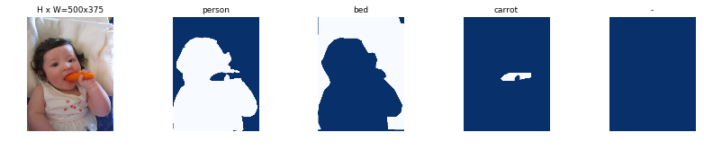
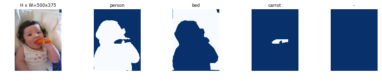

Mask R-CNN - Inspect Training Data#
Inspect and visualize data loading and pre-processing code.
import os
import sys
import itertools
import math
import logging
import json
import re
import random
from collections import OrderedDict
import numpy as np
import matplotlib
import matplotlib.pyplot as plt
import matplotlib.patches as patches
import matplotlib.lines as lines
from matplotlib.patches import Polygon
# Root directory of the project
ROOT_DIR = os.path.abspath("../../")
# Import Mask RCNN
sys.path.append(ROOT_DIR) # To find local version of the library
from mrcnn import utils
from mrcnn import visualize
from mrcnn.visualize import display_images
import mrcnn.model as modellib
from mrcnn.model import log
%matplotlib inline
Using TensorFlow backend.
Configurations#
Run one of the code blocks below to import and load the configurations to use.
# Run one of the code blocks
# Shapes toy dataset
# import shapes
# config = shapes.ShapesConfig()
# MS COCO Dataset
import coco
config = coco.CocoConfig()
COCO_DIR = "path to COCO dataset" # TODO: enter value here
Dataset#
# Load dataset
if config.NAME == 'shapes':
dataset = shapes.ShapesDataset()
dataset.load_shapes(500, config.IMAGE_SHAPE[0], config.IMAGE_SHAPE[1])
elif config.NAME == "coco":
dataset = coco.CocoDataset()
dataset.load_coco(COCO_DIR, "train")
# Must call before using the dataset
dataset.prepare()
print("Image Count: {}".format(len(dataset.image_ids)))
print("Class Count: {}".format(dataset.num_classes))
for i, info in enumerate(dataset.class_info):
print("{:3}. {:50}".format(i, info['name']))
loading annotations into memory...
Done (t=11.93s)
creating index...
index created!
Image Count: 82081
Class Count: 81
0. BG
1. person
2. bicycle
3. car
4. motorcycle
5. airplane
6. bus
7. train
8. truck
9. boat
10. traffic light
11. fire hydrant
12. stop sign
13. parking meter
14. bench
15. bird
16. cat
17. dog
18. horse
19. sheep
20. cow
21. elephant
22. bear
23. zebra
24. giraffe
25. backpack
26. umbrella
27. handbag
28. tie
29. suitcase
30. frisbee
31. skis
32. snowboard
33. sports ball
34. kite
35. baseball bat
36. baseball glove
37. skateboard
38. surfboard
39. tennis racket
40. bottle
41. wine glass
42. cup
43. fork
44. knife
45. spoon
46. bowl
47. banana
48. apple
49. sandwich
50. orange
51. broccoli
52. carrot
53. hot dog
54. pizza
55. donut
56. cake
57. chair
58. couch
59. potted plant
60. bed
61. dining table
62. toilet
63. tv
64. laptop
65. mouse
66. remote
67. keyboard
68. cell phone
69. microwave
70. oven
71. toaster
72. sink
73. refrigerator
74. book
75. clock
76. vase
77. scissors
78. teddy bear
79. hair drier
80. toothbrush
Display Samples#
Load and display images and masks.
# Load and display random samples
image_ids = np.random.choice(dataset.image_ids, 4)
for image_id in image_ids:
image = dataset.load_image(image_id)
mask, class_ids = dataset.load_mask(image_id)
visualize.display_top_masks(image, mask, class_ids, dataset.class_names)
 


Bounding Boxes#
Rather than using bounding box coordinates provided by the source datasets, we compute the bounding boxes from masks instead. This allows us to handle bounding boxes consistently regardless of the source dataset, and it also makes it easier to resize, rotate, or crop images because we simply generate the bounding boxes from the updates masks rather than computing bounding box transformation for each type of image transformation.
# Load random image and mask.
image_id = random.choice(dataset.image_ids)
image = dataset.load_image(image_id)
mask, class_ids = dataset.load_mask(image_id)
# Compute Bounding box
bbox = utils.extract_bboxes(mask)
# Display image and additional stats
print("image_id ", image_id, dataset.image_reference(image_id))
log("image", image)
log("mask", mask)
log("class_ids", class_ids)
log("bbox", bbox)
# Display image and instances
visualize.display_instances(image, bbox, mask, class_ids, dataset.class_names)
image_id 74886 http://cocodataset.org/#explore?id=118535
image shape: (375, 500, 3) min: 0.00000 max: 255.00000
mask shape: (375, 500, 5) min: 0.00000 max: 1.00000
class_ids shape: (5,) min: 1.00000 max: 35.00000
bbox shape: (5, 4) min: 1.00000 max: 329.00000

Resize Images#
To support multiple images per batch, images are resized to one size (1024x1024). Aspect ratio is preserved, though. If an image is not square, then zero padding is added at the top/bottom or right/left.
# Load random image and mask.
image_id = np.random.choice(dataset.image_ids, 1)[0]
image = dataset.load_image(image_id)
mask, class_ids = dataset.load_mask(image_id)
original_shape = image.shape
# Resize
image, window, scale, padding, _ = utils.resize_image(
image,
min_dim=config.IMAGE_MIN_DIM,
max_dim=config.IMAGE_MAX_DIM,
mode=config.IMAGE_RESIZE_MODE)
mask = utils.resize_mask(mask, scale, padding)
# Compute Bounding box
bbox = utils.extract_bboxes(mask)
# Display image and additional stats
print("image_id: ", image_id, dataset.image_reference(image_id))
print("Original shape: ", original_shape)
log("image", image)
log("mask", mask)
log("class_ids", class_ids)
log("bbox", bbox)
# Display image and instances
visualize.display_instances(image, bbox, mask, class_ids, dataset.class_names)
image_id: 6480 http://cocodataset.org/#explore?id=402563
Original shape: (476, 640, 3)
image shape: (1024, 1024, 3) min: 0.00000 max: 255.00000
mask shape: (1024, 1024, 32) min: 0.00000 max: 1.00000
class_ids shape: (32,) min: 1.00000 max: 77.00000
bbox shape: (32, 4) min: 1.00000 max: 991.00000
/usr/local/lib/python3.5/dist-packages/scipy/ndimage/interpolation.py:600: UserWarning: From scipy 0.13.0, the output shape of zoom() is calculated with round() instead of int() - for these inputs the size of the returned array has changed.
"the returned array has changed.", UserWarning)

Mini Masks#
Instance binary masks can get large when training with high resolution images. For example, if training with 1024x1024 image then the mask of a single instance requires 1MB of memory (Numpy uses bytes for boolean values). If an image has 100 instances then that’s 100MB for the masks alone.
To improve training speed, we optimize masks by:
We store mask pixels that are inside the object bounding box, rather than a mask of the full image. Most objects are small compared to the image size, so we save space by not storing a lot of zeros around the object.
We resize the mask to a smaller size (e.g. 56x56). For objects that are larger than the selected size we lose a bit of accuracy. But most object annotations are not very accuracy to begin with, so this loss is negligable for most practical purposes. Thie size of the mini_mask can be set in the config class.
To visualize the effect of mask resizing, and to verify the code correctness, we visualize some examples.
image_id = np.random.choice(dataset.image_ids, 1)[0]
image, image_meta, class_ids, bbox, mask = modellib.load_image_gt(
dataset, config, image_id, use_mini_mask=False)
log("image", image)
log("image_meta", image_meta)
log("class_ids", class_ids)
log("bbox", bbox)
log("mask", mask)
display_images([image]+[mask[:,:,i] for i in range(min(mask.shape[-1], 7))])
image shape: (1024, 1024, 3) min: 0.00000 max: 255.00000
image_meta shape: (89,) min: 0.00000 max: 23221.00000
bbox shape: (1, 5) min: 62.00000 max: 578.00000
mask shape: (1024, 1024, 1) min: 0.00000 max: 1.00000

visualize.display_instances(image, bbox, mask, class_ids, dataset.class_names)
# Add augmentation and mask resizing.
image, image_meta, class_ids, bbox, mask = modellib.load_image_gt(
dataset, config, image_id, augment=True, use_mini_mask=True)
log("mask", mask)
display_images([image]+[mask[:,:,i] for i in range(min(mask.shape[-1], 7))])
mask shape: (56, 56, 1) min: 0.00000 max: 1.00000
mask = utils.expand_mask(bbox, mask, image.shape)
visualize.display_instances(image, bbox, mask, class_ids, dataset.class_names)

Anchors#
The order of anchors is important. Use the same order in training and prediction phases. And it must match the order of the convolution execution.
For an FPN network, the anchors must be ordered in a way that makes it easy to match anchors to the output of the convolution layers that predict anchor scores and shifts.
Sort by pyramid level first. All anchors of the first level, then all of the second and so on. This makes it easier to separate anchors by level.
Within each level, sort anchors by feature map processing sequence. Typically, a convolution layer processes a feature map starting from top-left and moving right row by row.
For each feature map cell, pick any sorting order for the anchors of different ratios. Here we match the order of ratios passed to the function.
Anchor Stride: In the FPN architecture, feature maps at the first few layers are high resolution. For example, if the input image is 1024x1024 then the feature map of the first layer is 256x256, which generates about 200K anchors (256x256x3). These anchors are 32x32 pixels and their stride relative to image pixels is 4 pixels, so there is a lot of overlap. We can reduce the load significantly if we generate anchors for every other cell in the feature map. A stride of 2 will cut the number of anchors by 4, for example.
In this implementation we use an anchor stride of 2, which is different from the paper.
# Generate Anchors
backbone_shapes = modellib.compute_backbone_shapes(config, config.IMAGE_SHAPE)
anchors = utils.generate_pyramid_anchors(config.RPN_ANCHOR_SCALES,
config.RPN_ANCHOR_RATIOS,
backbone_shapes,
config.BACKBONE_STRIDES,
config.RPN_ANCHOR_STRIDE)
# Print summary of anchors
num_levels = len(backbone_shapes)
anchors_per_cell = len(config.RPN_ANCHOR_RATIOS)
print("Count: ", anchors.shape[0])
print("Scales: ", config.RPN_ANCHOR_SCALES)
print("ratios: ", config.RPN_ANCHOR_RATIOS)
print("Anchors per Cell: ", anchors_per_cell)
print("Levels: ", num_levels)
anchors_per_level = []
for l in range(num_levels):
num_cells = backbone_shapes[l][0] * backbone_shapes[l][1]
anchors_per_level.append(anchors_per_cell * num_cells // config.RPN_ANCHOR_STRIDE**2)
print("Anchors in Level {}: {}".format(l, anchors_per_level[l]))
Count: 65472
Scales: (32, 64, 128, 256, 512)
ratios: [0.5, 1, 2]
Anchors per Cell: 3
Levels: 5
Anchors in Level 0: 49152
Anchors in Level 1: 12288
Anchors in Level 2: 3072
Anchors in Level 3: 768
Anchors in Level 4: 192
Visualize anchors of one cell at the center of the feature map of a specific level.
## Visualize anchors of one cell at the center of the feature map of a specific level
# Load and draw random image
image_id = np.random.choice(dataset.image_ids, 1)[0]
image, image_meta, _, _, _ = modellib.load_image_gt(dataset, config, image_id)
fig, ax = plt.subplots(1, figsize=(10, 10))
ax.imshow(image)
levels = len(backbone_shapes)
for level in range(levels):
colors = visualize.random_colors(levels)
# Compute the index of the anchors at the center of the image
level_start = sum(anchors_per_level[:level]) # sum of anchors of previous levels
level_anchors = anchors[level_start:level_start+anchors_per_level[level]]
print("Level {}. Anchors: {:6} Feature map Shape: {}".format(level, level_anchors.shape[0],
backbone_shapes[level]))
center_cell = backbone_shapes[level] // 2
center_cell_index = (center_cell[0] * backbone_shapes[level][1] + center_cell[1])
level_center = center_cell_index * anchors_per_cell
center_anchor = anchors_per_cell * (
(center_cell[0] * backbone_shapes[level][1] / config.RPN_ANCHOR_STRIDE**2) \
+ center_cell[1] / config.RPN_ANCHOR_STRIDE)
level_center = int(center_anchor)
# Draw anchors. Brightness show the order in the array, dark to bright.
for i, rect in enumerate(level_anchors[level_center:level_center+anchors_per_cell]):
y1, x1, y2, x2 = rect
p = patches.Rectangle((x1, y1), x2-x1, y2-y1, linewidth=2, facecolor='none',
edgecolor=(i+1)*np.array(colors[level]) / anchors_per_cell)
ax.add_patch(p)
Level 0. Anchors: 49152 Feature map Shape: [256 256]
Level 1. Anchors: 12288 Feature map Shape: [128 128]
Level 2. Anchors: 3072 Feature map Shape: [64 64]
Level 3. Anchors: 768 Feature map Shape: [32 32]
Level 4. Anchors: 192 Feature map Shape: [16 16]
/usr/local/lib/python3.5/dist-packages/scipy/ndimage/interpolation.py:600: UserWarning: From scipy 0.13.0, the output shape of zoom() is calculated with round() instead of int() - for these inputs the size of the returned array has changed.
"the returned array has changed.", UserWarning)
Data Generator#
# Create data generator
random_rois = 2000
g = modellib.data_generator(
dataset, config, shuffle=True, random_rois=random_rois,
batch_size=4,
detection_targets=True)
# Uncomment to run the generator through a lot of images
# to catch rare errors
# for i in range(1000):
# print(i)
# _, _ = next(g)
# Get Next Image
if random_rois:
[normalized_images, image_meta, rpn_match, rpn_bbox, gt_class_ids, gt_boxes, gt_masks, rpn_rois, rois], \
[mrcnn_class_ids, mrcnn_bbox, mrcnn_mask] = next(g)
log("rois", rois)
log("mrcnn_class_ids", mrcnn_class_ids)
log("mrcnn_bbox", mrcnn_bbox)
log("mrcnn_mask", mrcnn_mask)
else:
[normalized_images, image_meta, rpn_match, rpn_bbox, gt_boxes, gt_masks], _ = next(g)
log("gt_class_ids", gt_class_ids)
log("gt_boxes", gt_boxes)
log("gt_masks", gt_masks)
log("rpn_match", rpn_match, )
log("rpn_bbox", rpn_bbox)
image_id = modellib.parse_image_meta(image_meta)["image_id"][0]
print("image_id: ", image_id, dataset.image_reference(image_id))
# Remove the last dim in mrcnn_class_ids. It's only added
# to satisfy Keras restriction on target shape.
mrcnn_class_ids = mrcnn_class_ids[:,:,0]
rois shape: (4, 128, 4) min: 0.00000 max: 1023.00000
mrcnn_class_ids shape: (4, 128, 1) min: 0.00000 max: 67.00000
mrcnn_bbox shape: (4, 128, 81, 5) min: -3.58824 max: 3.45455
mrcnn_mask shape: (4, 128, 28, 28, 81) min: 0.00000 max: 1.00000
gt_boxes shape: (4, 100, 5) min: 0.00000 max: 1024.00000
gt_masks shape: (4, 56, 56, 100) min: 0.00000 max: 1.00000
rpn_match shape: (4, 65472, 1) min: -1.00000 max: 1.00000
rpn_bbox shape: (4, 256, 4) min: -4.60969 max: 1.76777
image_id: 2937 http://cocodataset.org/#explore?id=135453
/usr/local/lib/python3.5/dist-packages/scipy/ndimage/interpolation.py:600: UserWarning: From scipy 0.13.0, the output shape of zoom() is calculated with round() instead of int() - for these inputs the size of the returned array has changed.
"the returned array has changed.", UserWarning)
b = 0
# Restore original image (reverse normalization)
sample_image = modellib.unmold_image(normalized_images[b], config)
# Compute anchor shifts.
indices = np.where(rpn_match[b] == 1)[0]
refined_anchors = utils.apply_box_deltas(anchors[indices], rpn_bbox[b, :len(indices)] * config.RPN_BBOX_STD_DEV)
log("anchors", anchors)
log("refined_anchors", refined_anchors)
# Get list of positive anchors
positive_anchor_ids = np.where(rpn_match[b] == 1)[0]
print("Positive anchors: {}".format(len(positive_anchor_ids)))
negative_anchor_ids = np.where(rpn_match[b] == -1)[0]
print("Negative anchors: {}".format(len(negative_anchor_ids)))
neutral_anchor_ids = np.where(rpn_match[b] == 0)[0]
print("Neutral anchors: {}".format(len(neutral_anchor_ids)))
# ROI breakdown by class
for c, n in zip(dataset.class_names, np.bincount(mrcnn_class_ids[b].flatten())):
if n:
print("{:23}: {}".format(c[:20], n))
# Show positive anchors
visualize.draw_boxes(sample_image, boxes=anchors[positive_anchor_ids],
refined_boxes=refined_anchors)
anchors shape: (65472, 4) min: -362.03867 max: 1258.03867
refined_anchors shape: (4, 4) min: 112.99997 max: 912.00000
Positive anchors: 4
Negative anchors: 252
Neutral anchors: 65216
BG : 90
chair : 6
bed : 30
remote : 2

# Show negative anchors
visualize.draw_boxes(sample_image, boxes=anchors[negative_anchor_ids])

# Show neutral anchors. They don't contribute to training.
visualize.draw_boxes(sample_image, boxes=anchors[np.random.choice(neutral_anchor_ids, 100)])
ROIs#
if random_rois:
# Class aware bboxes
bbox_specific = mrcnn_bbox[b, np.arange(mrcnn_bbox.shape[1]), mrcnn_class_ids[b], :]
# Refined ROIs
refined_rois = utils.apply_box_deltas(rois[b].astype(np.float32), bbox_specific[:,:4] * config.BBOX_STD_DEV)
# Class aware masks
mask_specific = mrcnn_mask[b, np.arange(mrcnn_mask.shape[1]), :, :, mrcnn_class_ids[b]]
visualize.draw_rois(sample_image, rois[b], refined_rois, mask_specific, mrcnn_class_ids[b], dataset.class_names)
# Any repeated ROIs?
rows = np.ascontiguousarray(rois[b]).view(np.dtype((np.void, rois.dtype.itemsize * rois.shape[-1])))
_, idx = np.unique(rows, return_index=True)
print("Unique ROIs: {} out of {}".format(len(idx), rois.shape[1]))
Positive ROIs: 38
Negative ROIs: 90
Positive Ratio: 0.30
Unique ROIs: 128 out of 128

if random_rois:
# Dispalay ROIs and corresponding masks and bounding boxes
ids = random.sample(range(rois.shape[1]), 8)
images = []
titles = []
for i in ids:
image = visualize.draw_box(sample_image.copy(), rois[b,i,:4].astype(np.int32), [255, 0, 0])
image = visualize.draw_box(image, refined_rois[i].astype(np.int64), [0, 255, 0])
images.append(image)
titles.append("ROI {}".format(i))
images.append(mask_specific[i] * 255)
titles.append(dataset.class_names[mrcnn_class_ids[b,i]][:20])
display_images(images, titles, cols=4, cmap="Blues", interpolation="none")

# Check ratio of positive ROIs in a set of images.
if random_rois:
limit = 10
temp_g = modellib.data_generator(
dataset, config, shuffle=True, random_rois=10000,
batch_size=1, detection_targets=True)
total = 0
for i in range(limit):
_, [ids, _, _] = next(temp_g)
positive_rois = np.sum(ids[0] > 0)
total += positive_rois
print("{:5} {:5.2f}".format(positive_rois, positive_rois/ids.shape[1]))
print("Average percent: {:.2f}".format(total/(limit*ids.shape[1])))
42 0.33
42 0.33
42 0.33
42 0.33
42 0.33
42 0.33
42 0.33
42 0.33
42 0.33
42 0.33
Average percent: 0.33
/usr/local/lib/python3.5/dist-packages/scipy/ndimage/interpolation.py:600: UserWarning: From scipy 0.13.0, the output shape of zoom() is calculated with round() instead of int() - for these inputs the size of the returned array has changed.
"the returned array has changed.", UserWarning)